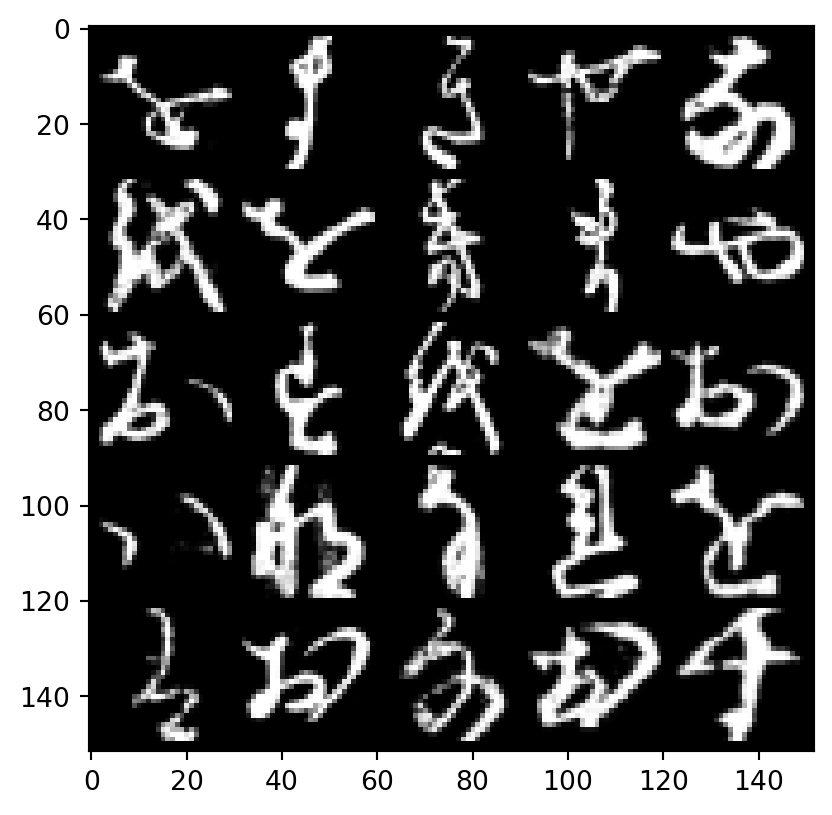

import torch
from torch import nn
from tqdm.auto import tqdm
from torchvision import datasets, transforms
from torch.utils.data import DataLoader
from torchvision.utils import make_grid
import matplotlib.pyplot as pltIn the last post, I briefed you the history and concept of Generative Adversarial Networks (GANs). In this post, we will get more technical, going into the training process as well as trying our hand creating a simple GAN model on my favourite dataset, KMNIST.
Concept - Training GANs:
Like any training process, the process GANs can be decomposed into feed-forward and backpropagation, though with distinct features from, say, training a classifier. The parameters updated after backpropagation can also be divided into two steps, for Discriminator and Generator. These are summed up in the images below:
Hopefully the ideas are not too complicated. If they are so, hopefully things will make more sense when we look at the codes.
Hands-on - Creating GANs:
The dataset:
First rule: always, always look at the data first. Now, KMNIST is a dataset inspired by the MNIST dataset of 10 hand-written digits. Here, we have 10 hand-written Kanji characters. Look at the provided examples, the handwriting surely looks messy, some almost unrecognizable from the modern version.

Similar to MNIST, a KMNIST image has only one channel. Let’s visualize one.
# Function learnt from GAN's Specialization Course 1 Week 1
def tensor_show(image_tensor, num_images=25, size=(1, 28, 28)):
# The original image tensor could be stored on GPU and
# have been flattened out for training, so we restore it
# first.
image_unflat = image_tensor.detach().cpu().view(-1, *size)
image_grid = make_grid(image_unflat[:num_images], nrow=5)
# torch uses (color channel, height, width) while
# matplotlib used (height, width, color channel)
# so we fix it here
plt.imshow(image_grid.permute(1, 2, 0).squeeze())
plt.show()# Download needs to be set to True the first time you run it.
batch_size = 32
dataloader = DataLoader(
datasets.KMNIST('data', download=False, transform=transforms.ToTensor()),
batch_size=batch_size,
shuffle=True)image_tensor = next(iter(dataloader))[0]
tensor_show(image_tensor)
The Discriminator:
The architecture for each block of Discriminator and Generator follows the suggestions from the Deep Convolutional GAN paper.
The Discriminator is essentially a classifier, so we can define as with a normal classifier. It means that we can start with the good ol’ linear model, but I will skip a bit to the year 2015, when DCGAN was introduced and construct my GANs with a 3-layered convolutional architecture. To conveniently construct each layer, I will also define a general function to create a layer of arbitrary sizes. A non-last layer will have a convolution followed by batch normalization and LeakyReLU (batch normalization is there to stabilize GAN’s training. We will touch upon tricks to stabilize GAN’s training in the next post).
class Discriminator(nn.Module):
def __init__(self, image_channel=1, hidden_dim=56):
super().__init__()
self.disc = nn.Sequential(
self.make_disc_block(image_channel, hidden_dim),
self.make_disc_block(hidden_dim, hidden_dim),
self.make_disc_block(hidden_dim, 1, final_layer=True),
)
def make_disc_block(self, input_channels, output_channels, kernel_size=4, stride=2, final_layer=False):
if not final_layer:
return nn.Sequential(
nn.Conv2d(input_channels, output_channels, kernel_size, stride),
nn.BatchNorm2d(output_channels),
nn.LeakyReLU(negative_slope=0.25)
)
else: # Final Layer
return nn.Sequential(
nn.Conv2d(input_channels, output_channels, kernel_size, stride)
)
def forward(self, x: torch.Tensor):
x = self.disc(x)
# The input can be a tensor of multiple images
# We want to return a tensor with the possibility
# of real/fake for each image.
return x.view(len(x), -1)The Generator:
A point to note: convolution (or convolution/pooling) will reduce the dimensions of your data, essentially distilling the information to the output (the possibility of a class in a classifier). Meanwhile, Generator will make use of the transposed convolution operation, which increases the dimensions of data, essentially magnifying the noises into an image. (I will create a blog post about convolution in the future, in the meantime, check out this notebook as my draft.)
First, we need a function to generate noise. Basically, we need some tensor containing random numbers, and we can conveniently return a tensor filled with random numbers from a normal distribution with torch.randn(). For the dimensions, we define argument z_dim as the dimension of the noise input, and n_samples as the number of samples we need.
def generate_noise(n_samples, z_dim, device='cpu'):
return torch.randn((n_samples, z_dim), device=device)For the Generator class, I will also create a function to construct each layer. A non-last layer will have a transposed convolution, followed by batch normalization and ReLU activation. The final layer does not have batch normalization but will have Tanh activation to squish the pixels in range.
class Generator(nn.Module):
def __init__(self, z_dim=14, image_channel=1, hidden_dim=56):
# z_dim is the dimension of the input noise vector
self.z_dim = z_dim
super().__init__()
self.gen = nn.Sequential(
self.make_gen_block(z_dim, hidden_dim * 4),
self.make_gen_block(hidden_dim * 4, hidden_dim * 2, kernel_size=4, stride=1),
self.make_gen_block(hidden_dim * 2, hidden_dim),
self.make_gen_block(hidden_dim, image_channel, kernel_size=4, final_layer=True),
)
def make_gen_block(self, input_channels, output_channels, kernel_size=3, stride=2, final_layer=False):
if not final_layer:
return nn.Sequential(
nn.ConvTranspose2d(input_channels, output_channels, kernel_size, stride),
nn.BatchNorm2d(output_channels),
nn.ReLU()
)
else: # Final Layer
return nn.Sequential(
nn.ConvTranspose2d(input_channels, output_channels, kernel_size, stride),
nn.Tanh()
)
# Recall torch expect an image to be in the form (color channel, height, width).
# In a batch, torch expects it to be (no. of images in batch, color channel, height, width)
# So we need to transform the noise, originally in (no. of images in batch, input dimension)
# to (no. of images in batch, input dimension, 1, 1)
# See more here:
# https://pytorch.org/vision/stable/transforms.html#transforming-and-augmenting-images
def unsqueeze_noise(self, noise):
return noise.view(len(noise), self.z_dim, 1, 1)
def forward(self, noise):
x = self.unsqueeze_noise(noise)
return self.gen(x)Optimizers and Criterion
Next, we want to define our optimizers (one for each model) and our criterion.
# We do not have activation at the output for Discriminator, so the outputs
# are raw (logits).
criterion = nn.BCEWithLogitsLoss()
z_dim = 64
display_step = 500
batch_size = 1000
# Learning rate of 0.0002 and beta_1 (momentum term for Adam optimizer) of
# 0.5 works well for DCGAN, according to the paper (yes, I seriously searched
# for keyword "learning rate" in the paper)
lr = 0.0002
beta_1 = 0.5
beta_2 = 0.999
# Device-agnostic code
device = 'cuda' if torch.cuda.is_available() else 'cpu'
# You can tranform the image values to be between -1 and 1 (the range of the Tanh activation)
transform = transforms.Compose([
transforms.ToTensor(),
transforms.Normalize((0.5,), (0.5,)),
])
dataloader = DataLoader(
datasets.KMNIST('data', download=False, transform=transform),
batch_size=batch_size,
shuffle=True)gen = Generator(z_dim).to(device)
gen_opt = torch.optim.Adam(gen.parameters(), lr=lr, betas=(beta_1, beta_2))
disc = Discriminator().to(device)
disc_opt = torch.optim.Adam(disc.parameters(), lr=lr, betas=(beta_1, beta_2))
# You initialize the weights to the normal distribution
# with mean 0 and standard deviation 0.02
# (Yes, the paper said so.)
def weights_init(m):
if isinstance(m, nn.Conv2d) or isinstance(m, nn.ConvTranspose2d):
torch.nn.init.normal_(m.weight, 0.0, 0.02)
if isinstance(m, nn.BatchNorm2d):
torch.nn.init.normal_(m.weight, 0.0, 0.02)
torch.nn.init.constant_(m.bias, 0)
# Apply recursively weights_init() according to the docs:
# https://pytorch.org/docs/stable/generated/torch.nn.Module.html#torch.nn.Module.apply
gen = gen.apply(weights_init)
disc = disc.apply(weights_init)Training
Okay, now onto training!
n_epochs = 100
cur_step = 1 # For visualization purpose
mean_generator_loss = 0
mean_discriminator_loss = 0
for epoch in range(n_epochs):
for real, _ in tqdm(dataloader):
cur_batch_size = len(real)
real = real.to(device)
## Update Discriminator
# Empty the optimizer
disc_opt.zero_grad()
# Generate noise and pass through Discriminator for fake examples
fake_noise = generate_noise(cur_batch_size, z_dim, device=device)
fake = gen(fake_noise)
disc_fake_pred = disc(fake.detach())
# Calculate loss
disc_fake_loss = criterion(disc_fake_pred, torch.zeros_like(disc_fake_pred))
# Same for real examples
disc_real_pred = disc(real)
disc_real_loss = criterion(disc_real_pred, torch.ones_like(disc_real_pred))
# The Discriminator's loss is the average of the two
disc_loss = (disc_fake_loss + disc_real_loss) / 2
# Keep track of the average Discriminator loss
mean_discriminator_loss += disc_loss.item() / display_step
# Update Discriminator's gradients a.k.a backpropagation
# Normally don't set retain_graph=True, but we do so for GAN
# as we need to propagate through the graph a second time
# when updating the Generator.
disc_loss.backward(retain_graph=True)
# Update Discriminator's optimizer
disc_opt.step()
## Update Generator
# Empty the optimizer
gen_opt.zero_grad()
# Generate noise and pass through Discriminator for fake examples
fake_noise_2 = generate_noise(cur_batch_size, z_dim, device=device)
fake_2 = gen(fake_noise_2)
disc_fake_pred = disc(fake_2)
# Calculate loss
gen_loss = criterion(disc_fake_pred, torch.ones_like(disc_fake_pred))
# Backpropagation for Generator's loss
gen_loss.backward()
# Update Generator's optimizer
gen_opt.step()
# Keep track of the average Generator loss
mean_generator_loss += gen_loss.item() / display_step
## Visualization code
if cur_step % display_step == 0 and cur_step > 0:
print(f"Epoch {epoch}, step {cur_step}: Generator loss: {mean_generator_loss}, Discriminator loss: {mean_discriminator_loss}")
tensor_show(fake)
tensor_show(real)
mean_generator_loss = 0
mean_discriminator_loss = 0
cur_step += 1Results:
After training for 100 epochs with the settings, I received the final results. 
One definitely can still discern which kanji characters were real and which were fake. However, one must admit that the model did manage to learn some of the intricate features of Japanese calligraphy. Then, after another 100 epochs… 
While it is still not yet indistinguishables, the Generator has gotten very close. The third image in the first row or the one at bottom left corner could definitely be passed off as real ones.
End of part 2
In this part, I have walked you through the training process and the building blocks of GANS. We have trained and witness good results from a simple model on the KMNIST dataset. In the next part, we will continue with the development of GANs, namely different ways to make training more stable. Up to now, it seemed really easy to achieve relatively good result with GANs (to be honest, we haven’t tried anything too complicated, too), but it will much harder when we touch upon larger models. See you then.
All the quoted paper from ArXiv was embedded with its corresponding Ar5iv link for the HTML version instead to support the tool. To change to the abstract page, follow this example: https://ar5iv.labs.arxiv.org/html/1409.1556 → https://arxiv.org/abs/1409.1556.